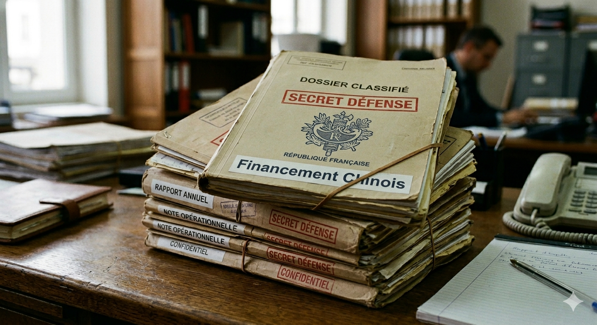

Alerte maximale à Paris : Le Palais de l’Élysée ravagé par un incendie historique
Les images qui circulent sur les réseaux sociaux coupent le souffle de la nation. Le Palais de l’Élysée, symbole du pouvoir exécutif français, est actuellement la proie des flammes. Le feu, qui aurait démarré aux alentours de 21h30 dans les combles de l'aile est, s'est propagé à une vitesse fulgurante à la charpente historique du bâtiment.

Tout le quartier du Faubourg Saint-Honoré a été immédiatement bouclé par un impressionnant cordon de sécurité composé de la Police Nationale et de la Garde Républicaine. Un nuage de fumée noire, visible à plusieurs kilomètres à la ronde dans le ciel parisien, a provoqué un début de panique parmi les passants et les résidents du 8e arrondissement.
La question de l'origine du sinistre est sur toutes les lèvres. Si certaines sources policières évoquent discrètement la piste d'un court-circuit majeur lié à des travaux de rénovation récents, aucune hypothèse — y compris celle d'un acte criminel ou d'une attaque malveillante — n'est écartée par les enquêteurs à ce stade.
Le Président de la République et ses proches collaborateurs, qui se trouvaient en réunion de crise au moment des faits, ont été évacués en toute sécurité vers un lieu tenu secret. Alors que la cellule interministérielle de crise vient d'être activée au Ministère de l'Intérieur, la préfecture appelle les Parisiens à éviter impérativement le secteur pour laisser travailler les secours.